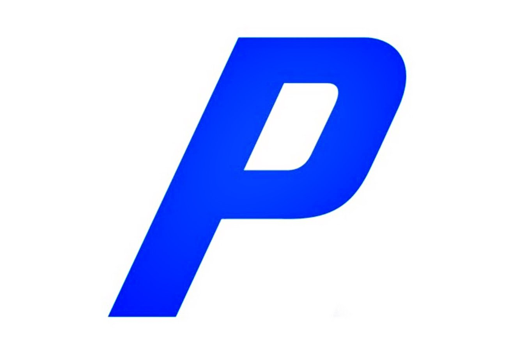
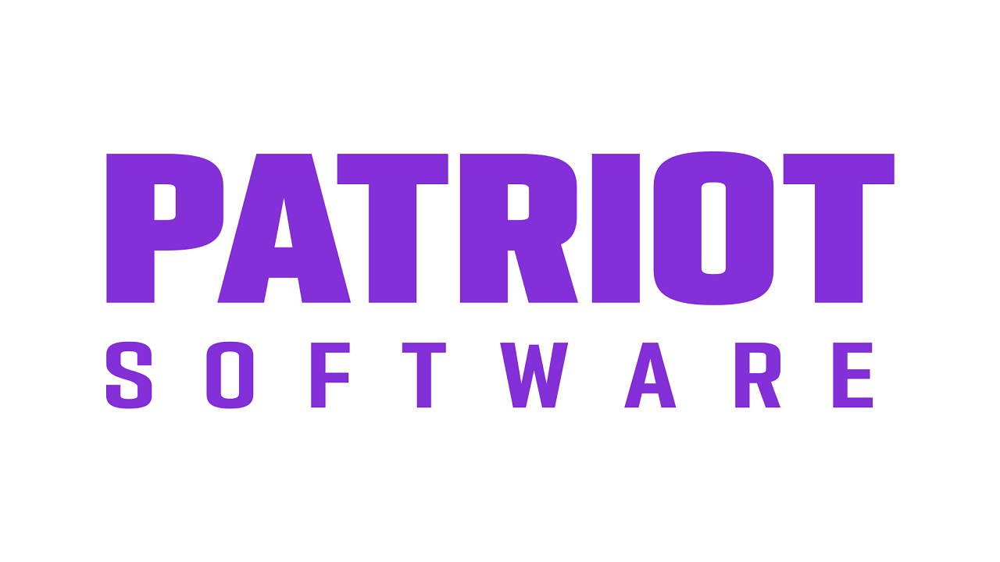
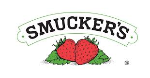

Senior Data Scientist, CRM Data Solutions
January 2026 — Present
Data Scientist, CRM Data Solutions
February 2024 — December 2025
Rotational Analyst, Commerical Lines Business Intelligence
January 2024 — February 2024
Rotational Analyst, CRM Digital Insights
February 2023 — December 2023
ADP Intern, Claims Business Intelligence
May 2022 — August 2022
Earlier Experiences

Audit & Assurance Intern
June 2021 — August 2021

QA Software Engineer Intern
May 2020 — August 2020

Business Analyst Intern
May 2019 — August 2019
Projects
Scroll to see all Model Cards
Effort Score
AnalyticsOne-liner: what this is, who it’s for, and why it matters. Keep it concrete.
- Outcome: e.g., +3.2% conversion / -12% handle time
- Tech: Python, SQL, Spark, XGBoost
- Role: lead / IC / collaborator
Bundle Propensity Model
GenAIOne-liner: what it does, where it fits, and the measurable value.
- Outcome: e.g., reduced time-to-answer by 40%
- Tech: RAG, embeddings, evaluation, prompt tooling
- Role: design + implementation
Bundle Expected Profit Model
GenAIOne-liner: what it does, where it fits, and the measurable value.
- Outcome: e.g., reduced time-to-answer by 40%
- Tech: RAG, embeddings, evaluation, prompt tooling
- Role: design + implementation
Loss Ratio Relativity Model
VizOne-liner: interactive visualization / dashboard / storytelling.
- Outcome: e.g., enabled stakeholders to self-serve insights
- Tech: D3, Plotly, Streamlit (or whatever)
Summarization Bot
VizOne-liner: interactive visualization / dashboard / storytelling.
- Outcome: e.g., enabled stakeholders to self-serve insights
- Tech: D3, Plotly, Streamlit (or whatever)
Summarization Audit Bot
VizOne-liner: interactive visualization / dashboard / storytelling.
- Outcome: e.g., enabled stakeholders to self-serve insights
- Tech: D3, Plotly, Streamlit (or whatever)
Machine Learning Template
VizOne-liner: interactive visualization / dashboard / storytelling.
- Outcome: e.g., enabled stakeholders to self-serve insights
- Tech: D3, Plotly, Streamlit (or whatever)
Customer Value Model
VizOne-liner: interactive visualization / dashboard / storytelling.
- Outcome: e.g., enabled stakeholders to self-serve insights
- Tech: D3, Plotly, Streamlit (or whatever)
Model Monitoring Dashboards
VizOne-liner: interactive visualization / dashboard / storytelling.
- Outcome: e.g., enabled stakeholders to self-serve insights
- Tech: D3, Plotly, Streamlit (or whatever)
Academic Background
Click a node to view details